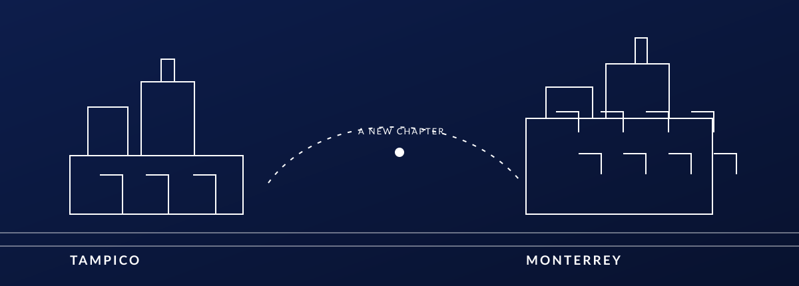
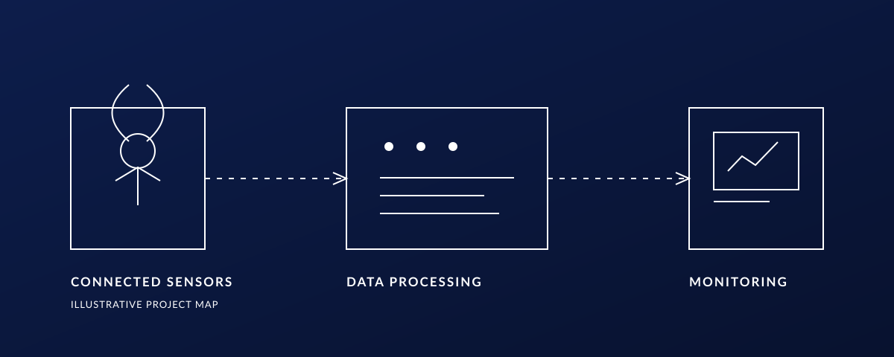
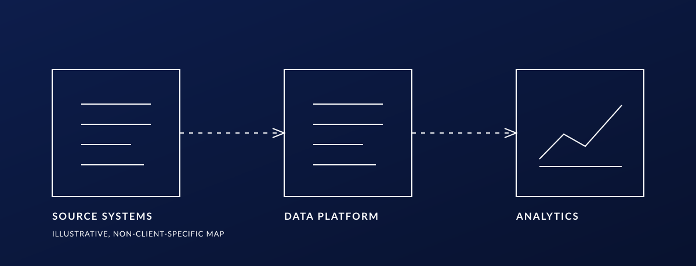

A visual record of the systems, research and experiences that shape how I build.
CSG — 01
A CONTINUOUS TIMELINE
Engineering across data, software and the physical world.
From mechatronics to computer science, my path has moved between engineering, research and technology. This page connects the places, ideas and systems behind that journey.
2023TAMPICO
THE BEGINNING
Tecnológico de Monterrey
Campus Tampico · Mechatronics and Industrial Engineering
My university path began in Tampico, exploring engineering through the interaction of machines, processes and people.

Two campuses. A growing view of engineering.
2024MONTERREY
A NEW DIRECTION
Data Science and Mathematics
Tecnológico de Monterrey · Campus Monterrey
A move to Monterrey and a deeper focus on mathematical thinking, data and the foundations behind intelligent systems.
StatisticsDataOptimizationMachine learning
2025SOFTWARE & RESEARCH
BUILDING WITH PURPOSE
Computer Science and Technology
From connected devices to production data
I shifted my studies toward software and computing systems, applying that perspective to collaborative engineering projects and research.

Conceptual map of connected sensing, data processing and monitoring.
NeoGuard
Built data ingestion, database, analysis and visualization workflows with Python, SQL and Oracle APEX for an IoT and AI neonatal-monitoring system. Co-authored a peer-reviewed IEEE paper presented at LARC-LARS.
Santander
Designed MySQL data models and ETL pipelines for a cloud document and employee-training platform, with individual and branch dashboards. Defined the AWS architecture and coordinated delivery with GitHub and Scrum.
2026DATA & CLOUD
WORKING AT SCALE
Data platforms in industry
From source systems to decisions
My work has increasingly centered on data engineering, analytics and cloud systems: building dependable flows from operational data to useful outcomes.

Illustrative map, not a representation of a confidential client architecture.
Industry
CEMEX · Global Data Science — Built Python and SQL workflows across Snowflake, Databricks and Azure for replenishment, forecasting and inventory planning. Translated Mexico and U.S. operating constraints into reusable data rules, contributing to an initiative with approximately USD 284K in annual savings.
HEINEKEN México · Data Engineering — Working with Azure Blob Storage and Databricks pipelines, PowerShell automation, analytics-ready data layers and Power BI delivery.
FEMSA · PQES — Designing a vendor-neutral GRC/IRM platform architecture with multi-cloud and on-prem deployment, governed AI, observability and post-quantum cryptography.
Research & products
CausalXAI — Anomaly diagnosis using causal graphs, residual scoring, graph optimization and robustness testing.
Industrial energy research — A FastAPI prototype combining RAG and a local LLM for cited report evaluation, data validation and reproducible energy calculations.
Salva Systems — Aplomo organizes geospatial yard inventory, appointments and truck traceability; Atenor structures WhatsApp customer, catalog, conversation and order data for AI-assisted operations.
Cáritas de Monterrey — Designed a SQL Server and ASP.NET Core system with REST APIs, authentication, validation and audit logging for social-assistance operations.
AccessFlow — An accessibility-focused iOS concept exploring SwiftUI, GitHub data and on-device AI.
Community
Archivo STEAM and Puente Impacto are part of my work in education, community programs and access to technology.
2027NEXT MILESTONE
IN PROGRESS
Still building.
The timeline continues. The next milestone is completing my degree in Computer Science and Technology.